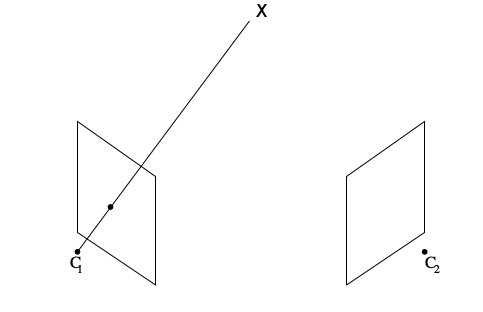
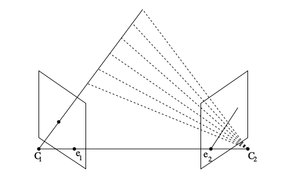
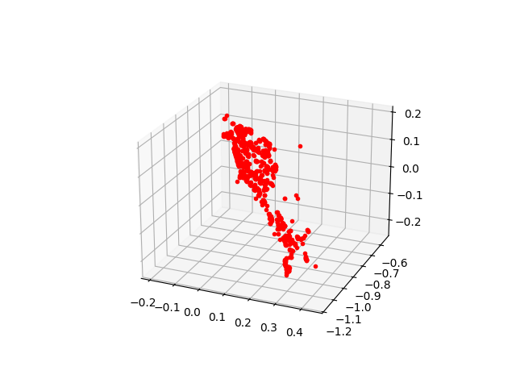
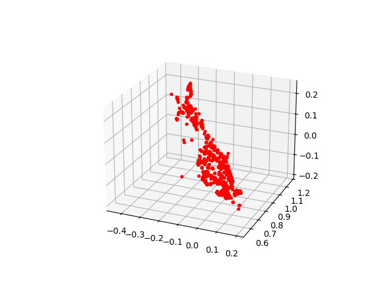
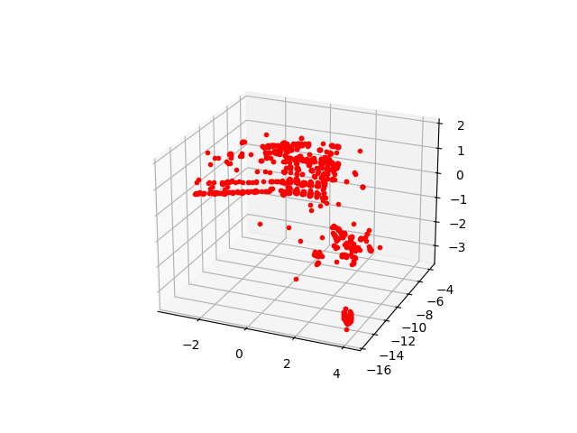
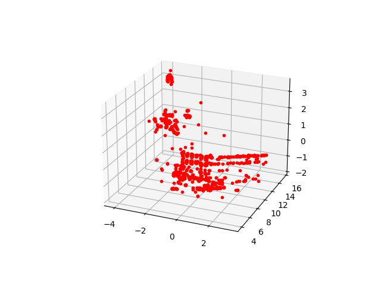

Temel Matris (Fundamental Matrix)
8'inci derste vazgeçilmez matris (essential matrix) konusunu görmüştük. Şimdi bu bölümdeki eşkutupsal kısıtlamanın (epipolar contraint) bir daha üzerinden geçelim, ama bu sefer temel matrisi merkez alalım. Aslında vazgeçilmez ve temel matrisler birbirine çok yakınlar, temel matris vazgeçilmezin içinden kalibre edilme faraziyesinin çıkartılmış hali. [1, sf. 257] diyor ki vazgeçilmez matriste her şey vazgeçilmez değilmiş demek ki (!).
Kalibrasyon, yani \(K\) nasıl çıkartılır? Diyelim ki bir kamera matrisi \(P = K[R | t]\) olarak tanımlı ve \(x = PX\) görüntüdeki bir piksel noktası. Bilinen bir \(K\) varsa onun tersini \(x\)'e uygulayarak \(\hat{x} = K ^{-1}x\) noktasını elde edebiliriz, o zaman \(\hat{x} = [R | t]X\) olur. Burada \(\hat{x}\)'i bir tür "normalize edilmiş'' kordinat sistemindeki bir görüntü pikseli olarak düşünebiliriz, bu sistem sanki kalibrasyonu birim matris, yani \(I\) olan bir kamera sistemidir. Aynı şekilde \(K ^{-1} P = [R|t]\) normalize kamera matrisi olarak adlandırılır.
Şimdi eşkutupsal kısıtlamaya tekrar bakalım. Altta soldaki resimde üç boyutlu gerçek dünyada bir \(X\) noktası var, bu noktadan merkezi \(C_1\)'de olan kameraya bir çizgi çekiyoruz. Bu çizgi üzerindeki her nokta aslında aynı piksel noktasına tekabül ediyor. Değil mi? Bu aslında bir bilgi kaybıdır, o çizgi üzerindeki tüm noktalar aynı piksele yansırsa bir şeyler kaybediliyor. Bu kaybedilen derinlik bilgisi. Neyse, şimdi bu çizgi üzerindeki tüm o noktaların ikinci bir kameradaki yansımalarını düşünelim. Bu tüm değişik yansımalar ikinci kameranın görüntüsünde bir çizgi oluştururlar (aynı piksel değil bu sefer, çünkü başka bir kameradayız), bu çizgiye eşkutupsal çizgi diyoruz (alt sağda).
 
Aynı duruma tek bir \(X\) için bakalım,
Demek ki ilk kameradaki iki boyutlu bir \(x\)'i alıp ikinci kameradaki \(x'\) noktasına transfer eden bir fonksiyon var, buna \(H_{\pi}\) diyelim. Tranfer 2D-2D, yani iki boyuttan iki boyuta bir geçiş, bir homografi, ve \(\pi\) düzlemi üzerinde bu geçiş oluyor. İkinci kameradaki eşkutupsal çizgi \(l' = [e']_x x'\) ile elde edilir, çünkü hatırlarsak iki noktadan çizgi elde etmek için çapraz çarpım lazım, ya da vektörlerden birinin eksi bakışımlı hali ile normal çarpım (altsimge \(_x\) eksi bakışımlılık dönüşümünü temsil ediyor). O zaman, ve \(x' = H_\pi x\) olduğu için,
\[ l' = [e']_x x' = l' = [e']_x H x = F x \]
de denebilir. İşte bu denklemin \([e']_xH\) kısmına temel matris \(F\) denir.
Eşkutupsal kısıtlama nedir? Bu kısıtlama
\[ x'^T F x = 0\]
ifadesidir. Bu ifade doğru çünkü eğer \(x\) ve \(x'\) birbirlerine karşılık noktalar iseler, o zaman \(x'\) eşkutupsal çizgi \(l' = Fx\) üzerinde olmalı, yani \(0 = x'^T l' = x'^T F x\).
Nokta Karşılıkları ve 8-Nokta Algoritması
İki resimden üç boyutta tekrar oluşturma için önce \(F\) matrisini hesaplamak gerekiyor. Oradan vazgeçilmez matris \(E\)'ye geçeceğiz, sonra \(E\) içinden \(R,T\) matrislerini çıkartabiliriz.
\(F\)'den \(E\)'ye geçiş basit, \(E = K^TFK\). İspat: Eğer eşkutupsal kısıtlama türetiminde normalize edilmiş noktaları kullansaydık \(\hat{x}'E \hat{x} = 0\) elde ederdik, ve \(\hat{x}\) ve \(\hat{x}'\) yerine \(x\) ve \(x'\) kullanırsak, \(\hat{x} = K ^{-1}x, \hat{x'} = K ^{-1}x'\), o zaman \(x'^TK^{-T}E K ^{-1}x = 0\) elde ederiz, bu demektir ki \(E = K ^T F K\).
\(F\) hesabına dönelim. Elimizde iki imaj var, Alkatraz adasının iki değişik yerden fotoğrafı [2,3]. Bu iki imaj üzerinde önce birbirine tekabül eden noktaları bulacağız. Bu iş için OpenCV'nin ORB adı verilen nokta özelliği (feature) çıkartan işlevini kullanabiliriz, onun yerine SIFT, SURF te olabilirdi.
from mpl_toolkits.mplot3d import axes3d
import scipy.linalg as lin
import cv2
dir = "/home/burak/Documents/Dropbox/Public/data/pcv_data"
img1 = cv2.imread(dir + "/alcatraz1.jpg")
img2 = cv2.imread(dir + "/alcatraz2.jpg")
detector = cv2.ORB_create( nfeatures = 10000 )
def detect_features(frame):
keypoints, descrs = detector.detectAndCompute(frame, None)
if descrs is None: descrs = []
return keypoints, descrs
FLANN_INDEX_LSH = 6
flann_params= dict(algorithm = FLANN_INDEX_LSH,
table_number = 6, # 12
key_size = 12, # 20
multi_probe_level = 1) #2
kp1, des1 = detect_features(img1)
kp2, des2 = detect_features(img2)
matcher = cv2.FlannBasedMatcher(flann_params, {})
matches = matcher.knnMatch(des1, des2, k = 2)
matches = [m[0] for m in matches \
if len(m) == 2 and m[0].distance < m[1].distance * 0.75]
print 'uyan noktalar', len(matches)
pts1 = []; pts2 = []
for i in range(len(matches)):
pt_a = kp1[matches[i].queryIdx].pt
pt_b = kp2[matches[i].trainIdx].pt
pt_a = np.array(pt_a).astype(int)
pt_b = np.array(pt_b).astype(int)
if np.sqrt(np.dot(pt_b-pt_a,pt_b-pt_a)) < 200:
pts1.append(pt_a)
pts2.append(pt_b)
cv2.line(img1, tuple(pt_a), tuple(pt_b), (255, 0, 0), 5)
cv2.circle(img1,tuple(pt_b), 5, (0,0,255), -1)
h,w,d = img1.shape
tmp = cv2.resize(img1, (int(w/4),int(h/4)))
cv2.imwrite('vision_20recons_01.jpg',tmp)
for pt in pts2: cv2.circle(img2,tuple(pt),5,(0,0,255),-1)
tmp = cv2.resize(img2, (int(w/4),int(h/4)))
cv2.imwrite('vision_20recons_02.jpg',tmp)
pts1 = np.array(pts1)
pts2 = np.array(pts2)
h,w,dum = img1.shape
pts1[:,1] = h-pts1[:,1]
pts2[:,1] = h-pts2[:,1]uyan noktalar 1298Birinci resimde saptanan ORB noktalarının ikinci resimdeki noktalara nasıl nasıl eşleştiğini (yine birinci resimde) gösterdik, ikinci resimde o resimdeki eşleşme noktaları görülüyor. Noktalardaki kayma kameranının hareketi hakkında bir ipucu veriyor bize, hareketi çıplak gözle bile görebiliyoruz. Temel matrisi hesaplayınca daha net bir sonuç alacağız tabii.
8-Nokta Algoritması
Daha önce \(E\) için 8-nokta algoritmasını gördük, benzer bir hesap \(F\) için de var. Bu arada 8 nokta dedik daha fazlasına da izin veren bir çözüm yöntemi SVD ile mümkün. Çözülecek sistem eşkutupsal kısıtlamadan başlar, \(i=1,2,..\) olacak şekilde her \(x_1^i,x_2^i\) eşleşmelerini bir \(x_1^i F x_2^i = 0\) hesabını içinde barındıran bir \(Af = 0\) sistemi yaratabiliriz, \(x_1^i = (x_1^i,y_1^i,w_1^i)\) ve \(x_2^i=(x_2^i,y_2^i,w_2^i)\) olacak şekilde,
\[ \left[\begin{array}{ccccc} x_2^1x_1^1 & x_2^1y_1^1 & x_2^1w_1^1 & \dots & w_2^1w_1^1 \\ x_2^2x_1^2 & x_2^2y_1^2 & x_2^2w_1^2 & \dots & w_2^2w_1^2 \\ \vdots & \vdots & \vdots & \vdots & \vdots \\ x_2^nx_1^n & x_2^ny_1^n & x_2^nw_1^n & \dots & w_2^nw_1^n \end{array}\right] \left[\begin{array}{c} F_{11} \\ F_{12} \\ F_{13} \\ \vdots \\ F_{33} \end{array}\right] = 0 \]
ki \(f\) içinde \(F\)'nin öğeleri var. Üstteki çarpım yapılınca teker teker her satırda eşkutupsal kısıtlamayı elde edebileceğimizi görebiliriz. \(Af = 0\) sistemi yaklaşık olarak SVD ile çözülebilir.
def compute_fundamental(x1, x2):
n = x1.shape[1]
A = np.zeros((n, 9))
for i in range(n):
A[i] = [x1[0, i] * x2[0, i], x1[0, i] * x2[1, i], x1[0, i] * x2[2, i],
x1[1, i] * x2[0, i], x1[1, i] * x2[1, i], x1[1, i] * x2[2, i],
x1[2, i] * x2[0, i], x1[2, i] * x2[1, i], x1[2, i] * x2[2, i],
]
U, S, V = np.linalg.svd(A)
F = V[-1].reshape(3, 3)
U, S, V = np.linalg.svd(F)
S[2] = 0
F = np.dot(U, np.dot(np.diag(S), V))
return F / F[2, 2]Eğer biraz önce bulunan noktalar üzerinde uygularsak,
def make_homog(points):
return np.vstack((points, np.ones((1, points.shape[1]))))
print compute_fundamental(make_homog(pts1.T),make_homog(pts2.T))[[ 1.30375335e-07 1.65553204e-07 -9.29038216e-04]
[ 5.01128878e-07 8.40553282e-07 -3.40774405e-03]
[ 3.28488982e-05 1.58554327e-03 1.00000000e+00]]Dahası da var. Bu hesap fena değildir, fakat \(F\) gibi kritik bir hesap için daha sağlam bir yaklaşım tercih ediliyor. RANSAC adı verilen metotla verilen tüm eşleşme noktalarından ufak örneklemler toplanır, her örneklem üzerinde üstteki hesap uygulanır, ve elde edilen sonuçlara bakılarak gerçek \(F\)'e yaklaşıp yaklaşılmadığı kararlarlaştırılmaya çalışılır, en iyi, stabil olan nihai sonuç elde tutulur. Detaylar için [1, sf. 291]. OpenCV cv2.findFundamentalMat çağrısı \(F\)'yi RANSAC ile hesaplayabilir. Sonra \(E\), onu \(R,t\) parçalarına ayırırız, vs., böyle devam ederiz.
# kamera matrisi biliniyor
K = np.array([[2394,0,932],[0,2398,628],[0,0,1]])
F, mask = cv2.findFundamentalMat(pts1,pts2,method=cv2.RANSAC, param1=3., param2=0.99)
print 'F', F
E = K.T.dot(F).dot(K)
print 'E', E
R1,R2,t = cv2.decomposeEssentialMat(E)
print 'R1',R1
print 'R2',R2
print 't',tF [[ 5.96322112e-08 5.60043096e-06 -2.04058699e-03]
[ -5.99484026e-06 1.84659966e-07 1.51380328e-02]
[ 1.78053340e-03 -1.63463214e-02 1.00000000e+00]]
E [[ 0.34176628 32.15102128 3.66775373]
[-34.41525089 1.0618694 23.18100597]
[ -4.61718585 -26.40378644 -0.10739647]]
R1 [[-0.29336175 -0.1052158 0.95019394]
[-0.13001529 -0.98029957 -0.14869019]
[ 0.94711927 -0.16715975 0.27390274]]
R2 [[ 0.9950157 -0.02174197 0.09731924]
[ 0.02293629 0.99967452 -0.01117018]
[-0.09704471 0.01334665 0.99519053]]
t [[ 0.63358512]
[-0.09669105]
[ 0.76760715]]Üçgenleme (Triangulation)
Yer değiştirme, rotasyon matrislerini biliyoruz, oradan her kamera için yansıtma matrisleri \(P,P'\)'yi oluşturabiliriz. Peki bu matrisleri kullanarak üç boyutta gerçek nokta \(X\)'leri nasıl hesaplarız? Halen elimizde sadece iki boyutlu imaj noktaları var, 3D dünya noktaları yok. \(X\)'leri hesaplamak için daha önce gördüğümüz direk lineer transform metotunun benzerini uygularız. Bu gerekli çünkü her iki kameradaki yansımadan oluşan hatalar, vs. sonucu mesela iki kameradan direk çizgi çekerek kesiştikleri yeri bulmaya çalışsak, alttaki durum ortaya çıkar,
O zaman yaklaşıksal bir çözüm gerekli, üstteki hata ortaya çıksa da, bu hatayı olabildiğince minimize etmeye uğraşmalıyız.
Birbirinin eşi olan iki piksel noktası için elimizde \(x = PX, x' = P'X\) denklemleri var, bu denklemde \(X\) aynı dikkat edersek, çünkü aynı 3D noktasının iki kameradaki değişik yansımaları var. Bu denklemleri birleştirerek bir \(AX=0\) sistemi ortaya çıkartabiliriz [1, sf. 312], ve bu sistem minimize edilebilir. Çapraz çarpım ile homojen ölçek faktörünü çıkartırsak, mesela ilk imaj için
\[ x \times (PX) = 0\]
Bu bize üç denklem verir,
\[ x(p^{3T}X) - (p^{1T}X) = 0 \]
\[ y(p^{3T}X) - (p^{2T}X) = 0 \]
\[ x(p^{2T}X) - (p^{1T}X) = 0 \]
ki \(p^{iT}\) \(P\) matrisinin satırlarıdır. Bu denklemler \(X\)'in öğelerine göre lineerdir. Bu sistemden hareketle \(AX=0\)'daki \(A\) şöyle,
\[ A = \left[\begin{array}{c} xp^{3T} - p^{1T} \\ yp^{3T} - p^{2T} \\ x'p'^{3T} - p'^{1T} \\ y'p'^{3T} - p'^{2T} \end{array}\right]\]
Her iki imajdan iki denklem alındı, toplam 4 denklem oldu. Bu denklem SVD ile, ya da \(AX=b\) şeklinde tekrar düzenlenip 2. derste gördüğümüz sözde ters (pseudoinverse) ile çözülebilir. Altta bu yöntem takip edildi,
import scipy.linalg as lin
def triangulate_point(u1, u2, P1, P2):
A = [[u1[0]*P1[2,0]-P1[0,0],u1[0]*P1[2,1]-P1[0,1],u1[0]*P1[2,2]-P1[0,2]],
[u1[1]*P1[2,0]-P1[1,0],u1[1]*P1[2,1]-P1[1,1],u1[1]*P1[2,2]-P1[1,2]],
[u2[0]*P2[2,0]-P2[0,0],u2[0]*P2[2,1]-P2[0,1],u2[0]*P2[2,2]-P2[0,2]],
[u2[1]*P2[2,0]-P2[1,0],u2[1]*P2[2,1]-P2[1,1],u2[1]*P2[2,2]-P2[1,2]]]
B = [[-(u1[0]*P1[2,3]-P1[0,3])],
[-(u1[1]*P1[2,3]-P1[1,3])],
[-(u2[0]*P2[2,3]-P2[0,3])],
[-(u2[1]*P2[2,3]-P2[1,3])]]
A = np.array(A)
B = np.array(B)
X = lin.lstsq(A,B)[0].T[0]
res = np.array([X[0],X[1],X[2],1])
return res
def triangulate(x1, x2, P1, P2):
X = [triangulate_point(x1[i, :], x2[i, :], P1, P2) for i in range(len(x1))]
return np.array(X).TTest amaçlı olarak bilinen P1,P2 ve yine iki boyutta eşliği bilinen noktalarla üçgenleme yapalım, sonra elde edilen üç boyutlu noktaları kameralara yansıtalım ve başladığımız imaj noktalarına uyuyor mu kontrol edelim.
P1 = np.eye(4)
P2 = np.array([[ 0.878, -0.01 , 0.479, -1.995],
[ 0.01 , 1. , 0.002, -0.226],
[-0.479, 0.002, 0.878, 0.615],
[ 0. , 0. , 0. , 1. ]])
# Homogeneous arrays
x1real = np.array([[ 0.091, 0.167, 0.231, 0.083, 0.154],
[ 0.364, 0.333, 0.308, 0.333, 0.308],
[ 1. , 1. , 1. , 1. , 1. ]])
x2real = np.array([[ 0.42 , 0.537, 0.645, 0.431, 0.538],
[ 0.389, 0.375, 0.362, 0.357, 0.345],
[ 1. , 1. , 1. , 1. , 1. ]])
X = triangulate( x1real.T, x2real.T, P1, P2 )
X /= X[3]
x1 = np.dot(P1[:3],X)
x2 = np.dot(P2[:3],X)
x1 /= x1[2]
x2 /= x2[2]
print 'X', X
print 'x', x1
print 'x2', x2X [[ 1.00277411 2.00859585 3.01259205 1.00350223 2.01053989]
[ 4.01217675 4.01023497 4.01743619 4.02955748 4.01893278]
[ 11.01977032 12.02833872 13.04162674 12.0914948 13.05493008]
[ 1. 1. 1. 1. 1. ]]
x [[ 0.09099773 0.16698863 0.23099818 0.0829924 0.15400618]
[ 0.36408896 0.33339891 0.30804717 0.33325553 0.3078479 ]
[ 1. 1. 1. 1. 1. ]]
x2 [[ 0.4200205 0.53709008 0.64501081 0.43105574 0.5379661 ]
[ 0.38890029 0.37453124 0.36194221 0.35671322 0.34517828]
[ 1. 1. 1. 1. 1. ]]Ana problemimize dönelim; şimdi ikinci kamera için ayrıştırmadan elde edilen \(R,t\) sonuçlarını kamera matrisi \(K\) ile çarparak \(P_2\) oluşturulmak lazım (\(P_1\) birim matrisi, o biliniyor), ve böylece her imaj nokta eşleri için üçgenleme yapacağız. Fakat 8. derste bahsedildiği gibi \(E\)'nin ayrıştırmasından dört türlü farklı \(R,t\) olasılığı ortaya çıkıyor, bu sonuçların her biri denenmeli. Altta bunu yapıyoruz, yani her seçenek için bir üç boyutta tekrar oluşturma yapacağız, ve sonuçları farklı grafiklerde göstereceğiz.
for i,P in enumerate(((R1,t),(R1,-t),(R2,t),(R2,-t))):
P1 = K.dot(np.hstack(P))
P00 = np.float64([ [1,0,0,0],
[0,1,0,0],
[0,0,1,0]])
P0 = K.dot(P00)
X = triangulate(pts1, pts2, P0, P1)
fig = plt.figure()
ax = fig.gca(projection='3d')
ax.plot(X[0], X[2], X[1], 'r.')
ax.view_init(elev=23., azim=-67)
plt.savefig('vision_20recons_03_%d.png' % i)   
Galiba alt sağdaki resim Alkatraz'a daha çok benziyor. Gerçek dünya uygulamalarında "kamera önüne düşen en çok nokta hangisinde'' gibi ek kodlar geliştirip gerçek 3D sonucu bu şekilde elenebiliyor.
Kaynaklar
[1] Zisserman, Multiple View Geometry in Computer Vision 2nd Edition
[2] Bayramlı, Resim 1, https://drive.google.com/uc?export=view&id=1pwzbfotghDX617znCMUd9AWet2XheiwZ
[3] Bayramlı, Resim 2, https://drive.google.com/uc?export=view&id=1GHbK2UpaSc7B3Ko84rEk83t0eesLFf7S